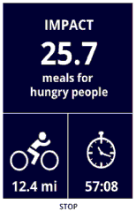
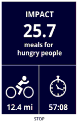
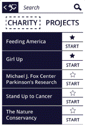

InviteBig (2015-current)
Description:
InviteBig is a web application designed to help venues and event organizers to collaborate and book events in real-time.

My role:
- Redesigned the website to improve conversion rates
- Designed the on-boarding flow for just registered users
- Interviewed venue managers and venue owners to help the team to identify the feature set based on the audience needs
- Created a survey and embedded it to the redesigned Request a demo page, to better understand users who request or about to request a demo.
- Created a survey targeted to the venue members staff (event managers) to identify their needs and motivations
- Created low and high fidelity wireframes
- Participated in various prototyping sessions
Tools Used:
Sketch, Balsamiq, TypeForm
INRIX (2014-2015)
Description:
INRIX IS Android and iOS applications that provide traffic, routes and travel time info. INRIX crowd sources data, and allows users to report inaccurate traffic colors and incidents along their itinerary.
My role:
- Designed and moderated user research sessions to test prototypes created by the design team (including in-person and online interviews)
- Ran card sorting and pre-qualification survey to identify user persona
- Created recommendation reports for different features designed by UI designers
- Designed and tested error handling experience for Android application
- Paper and digital prototyping

Tools Used:
Adobe Illustrator, UserTesting.com, InVision, OpenDS driving simulator (http://www.opends.de/), Car wheel, pedal and phone cradle set.
Here is an example:
My most recent exercise involved the Error Handling Experience feature.
Unfortunately, this project is under a Non Disclosure Agreement (NDA), so I can only describe the main steps in summary format.
I will show you only some screenshots.

What errors to handle?
Here is an example: The user cannot use app if the Location Services are turned off in the phone settings. Sometimes a user experiences network connection issues, or rarely, errors returned by the server
Error Handling Study Goal:
To design error handling in such a way that errors are noticed only when they are important, or may block further user interaction with the app.
For some of the screens, errors should
be drive-safe.
Activities performed:
- I ran two series of tests on UserTesting.com to determine if users understood the reasons for errors, and if error placements work.
- Designed different versions of error bars for the drive experience cases, and tested it with users on drive simulator
Challenge:
One of the most challenging parts was to decide how to mock real drive experience and achieve a similar-to-real, driving mental load
Main Finding:
Persona driving habits need improvement: Users from the same user group, with the same goals and motivators may use the phone in different ways in the car and have different distractors.
CrowdExchange, wireframe challenge (2015)
I participated in this project in terms of a wireframe challenge on the topcoder website.
Description:
CrowdExchange in an internal developer community portal. The challenge is to design a wireframe solution to help plan out "CrowdExchange" developer community. The goal is to create crowdsource model that allows employees to tackle the type of development activities they are interested in.
My role:
- design workflow for a "Project Manager" role with the help of given user stories
- create interactive prototype
Tools used:
Axure
WatermarkingApp, wireframe challenge (2015)
I participated in this project in terms of a wireframe challenge on the topcoder website.
Description:
The primary use case for this application is to provide the capability for the watermark authors to designate regions within a source image which upon scanning will link to online content. "Scanning" part of the technology is not included. The focus is solely on watermarking and trigger definition.
My role:
- design workflow based on the requirements given in the task
- create interactive prototype in OmniGraffle
Tools used:
OmniGraffle
Microsoft Multilingual App Toolkit (MAT) (2013)
I participated in this project in terms
of "HCDE 517: Usability Studies" course. It
was part of the HCDE certificate
program
What is MAT?
MAT is a software extension to the Microsoft® Visual Studio® 2012 IDE that enables developers of Windows 8 Phone Apps and Windows 8 Store Apps to create additional language versions of their apps.
My Role:
- Together with two other team members, we designed a test strategy to verify scenario flow.
- Designed part of the user testing test plan focused on collecting quantitative data.
- And with the team, participated in user testing of the actual application
- Processed testing results and compiled the plan for improvements.
- Presented results to MAT team members.
Tools Used:
Morae Manager, Microsoft Excel
“Charity Miles” mobile application Redesign (2014)
I participated in this project in terms of "HCDE 518: User-Centered Design " course. It was part of the HCDE certificate program.
What is Charity Miles?
CHARITY MILES is a fitness/donation Android and iOS app that allows users to earn money for charities while they walk, run, or bike.
 

My Role:
- Together with a team of four, created main personas based on market research (alexa.com) and designed a survey to identify user’s needs.
- I created my version of paper prototype and developed a user test plan for testing against different prototypes
- Processed the test results and made design change calls.
- Together with the team, presented final prototype version.
Tool used:
Axure
Charity Miles Study Question:
How to help increase usage among the current user base?
Main Findings:
There are three main motivators that strikes users to use the app:
- personal story that drives donation
- competitiveness with other users
- motivation to support personal physical activity
Final iteration of paper prototype
testing increased ease-of-use metric for
major tasks and improved findability for
main functionality.
Based on the recommendations I made after paper prototyping test session redesigned UI to address three motivation models.
Some Examples:
- Select Charity screen
- Now the Charity can be saved as a favorite to start with.
- Added search by charity feature.
- Charity details screen
- Added a Charity description and video.
- Added "Top 5" to resolve lack of competitiveness motivation.
- Tracking Screen
- This resolved one of the top issues: the ability to see different tracking types
- Profile Screen
- Resolved the issue of viewing money raised individually for the charity.
- By adding graphs to the Profile screen, we addressed motivation for personal activity and donation.
Before:

After:

Before:
After:

Before:
After:
Before:

After:

“Comprehensive Revenue Solutions” web site redesign (2014)
I participated in this project as part of the HCDE certificate program and the "HCDE 537: User-Centered Web Design" course.
What is CRS?
CRS is a web interface that helps target
small business health care providers to
find a reliable, accurate, secure,
inexpensive solution for optimizing
businesses processing.
Services may include: medical billing or
electronic medical records.
My Role:
- Together with a team of four, made a competitive analysis of similar websites.
- One team member interviewed current representative users.
- Together with team, ran card sorting exercise.
- Together with team, performed usability testing
- I designed my version of prototype and compiled the final prototype with the team
- Designed Website digital prototype (made responsive design with HTML/CSS).
CRS Study Questions:
- Build and design a “High Impact” – “Low Touch” Solution.
- Create a clear & understandable value prop of services.
- Increase prospective customer engagement.
Main Results:
- Icons for navigating were used the most, made them a focal point of the web side.
- Unhide services description to front.
Challenges:
- Card Sorting results were not as hoped.
- Subject matter needed more research.